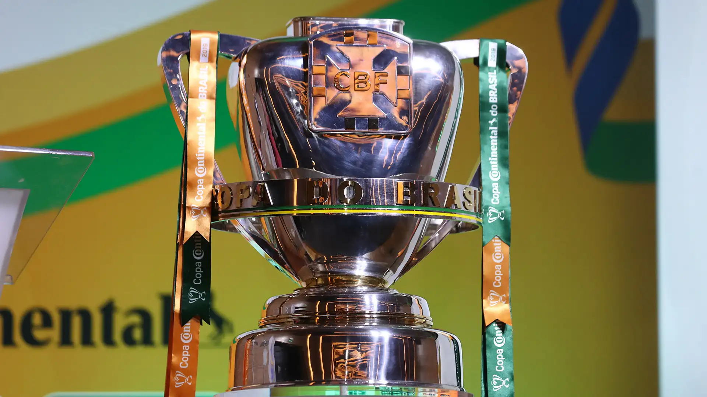
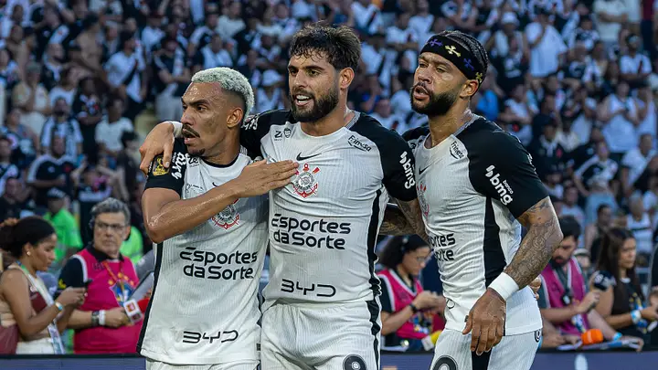

Copa do Brasil 2026 entra em fase decisiva com gigantes pressionados
Palmeiras, Corinthians e Atlético-MG seguem vivos em disputa marcada por equilíbrio e surpresas.

A Copa do Brasil 2026 chega ao momento mais decisivo da temporada com confrontos extremamente equilibrados e clima de decisão em praticamente todos os jogos. Considerado um dos torneios mais imprevisíveis do futebol brasileiro, o campeonato segue reunindo gigantes nacionais e equipes surpresa em busca do título milionário.
Palmeiras continua aparecendo entre os principais favoritos da competição. A equipe possui elenco profundo, experiência em mata-mata e chegam pressionadas para confirmar o favoritismo nas fases eliminatórias.

O Corinthians também vive grande expectativa dentro do torneio. Empurrado pela torcida, o clube paulista tenta utilizar a força da Neo Química Arena para avançar às fases finais. Já o Atlético Mineiro aposta na experiência de seu elenco e na intensidade ofensiva para continuar brigando pelo troféu.
Além dos favoritos, a edição de 2026 voltou a apresentar equipes consideradas zebras surpreendendo clubes tradicionais. Times da Série B e até mesmo divisões inferiores conseguiram eliminações históricas, reforçando o caráter imprevisível da competição.

A atmosfera dos jogos também tem chamado atenção. Estádios lotados, decisões por pênaltis e confrontos muito disputados aumentaram ainda mais o interesse do torcedor na competição nacional.
Com premiação milionária e vaga direta na Libertadores em jogo, a Copa do Brasil promete confrontos ainda mais intensos nas próximas fases. A expectativa é de grandes clássicos e jogos históricos até a decisão do torneio.